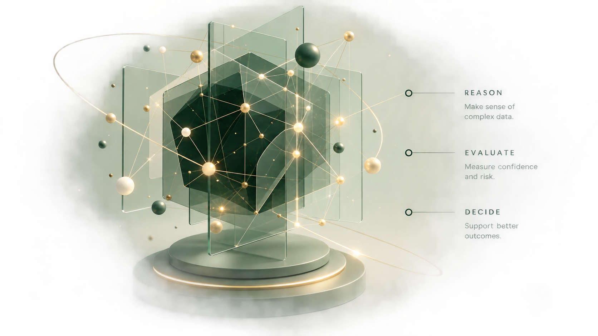

01
Selected work
Banking Compliance Agent
An agentic RAG system for reviewing lending documents against regulation, retrieving evidence, evaluating uncertainty and escalating cases when human judgement is needed.
AI Engineer & Data Scientist
I design and build reliable, explainable AI systems that solve real problems in finance, risk and compliance.

Selected work
An agentic RAG system for reviewing lending documents against regulation, retrieving evidence, evaluating uncertainty and escalating cases when human judgement is needed.
A BNPL risk intelligence platform for thin-file customers, combining modelling, monitoring, explainability and governance around credit decisions.
A production-style fraud pipeline built around cost-aware decisioning, explainability, champion-challenger testing and drift monitoring.
About me
Working in credit risk taught me that behind every score, threshold and model is a decision. That perspective now shapes how I build AI systems: not only whether the model works, but whether the system around it can be evaluated, explained, monitored and trusted.
My work spans credit risk, fraud detection and agentic AI, with a growing focus on AI engineering and evaluation.
What I build
I combine AI engineering with machine learning and domain knowledge to build systems that are accurate, reliable, explainable and ready to be scrutinised.
AI Engineering
From retrieval and tool integration to APIs and deployment, with an emphasis on maintainability and production readiness.
Credit Risk / Fraud / Financial Regulation / Responsible Automated Decisioning
© 2026 Korede Folarin
Resume
The site is ready for your final CV. When we choose the version, this button will download the PDF directly.